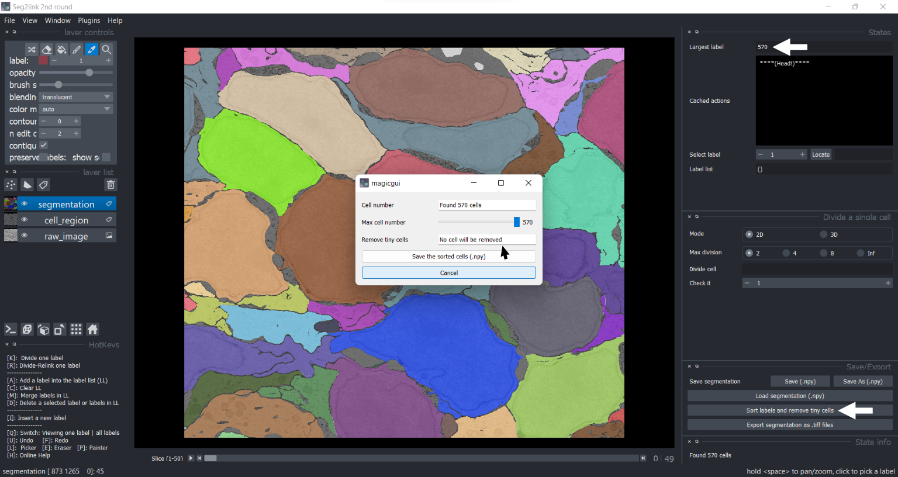
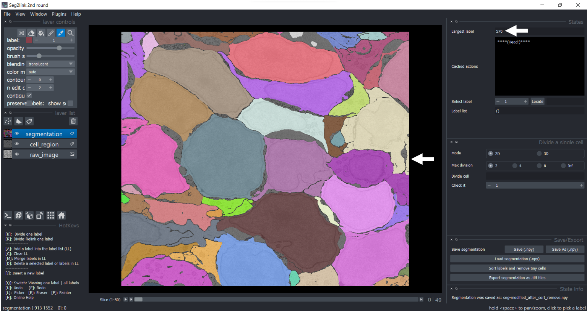
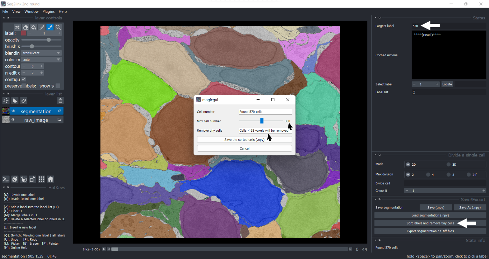
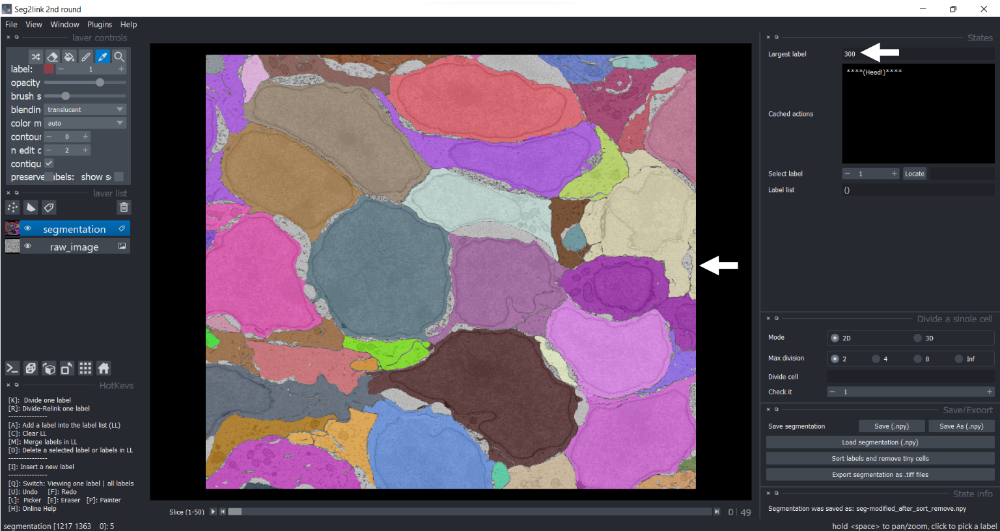

Sort and remove tiny cells
Sort labels by their sizes
-
Press the button "Sort labels and remove tiny cells".

Do not adjust the slide bar "Max cell number", unless you want to remove tiny cells.
-
Press the button "Save the sorted cells (.npy)".
 The labels have been sorted according to their sizes!!
Remove tiny cells
-
Press the button "Sort labels and remove tiny cells", and adjust the "Max cell number" to 300.
 The cells < 63 voxels will be removed!
-
Press the button "Save the sorted cells (.npy)".

In the updated result, only 300 sorted larger cells were kept!!
You can inspect these larger cells with Locate
Notes: How to go back
- Because all of the voxels must be updated, caching the sorting operation requires a large amount of memory, which should be avoided.
- To solve the problem, the segmentations before and after the operation are automatically saved as two files on the hard disk:
- seg-modified_before_sort_remove.npy
- seg-modified_after_sort_remove.npy
- If users are unsatisfied with the result, reload the state before sorting/removing with Load function.
- After applying sorting/removing operation, the cache of the operations will be reset. Users cannot use undo/redo to return to even earlier states.